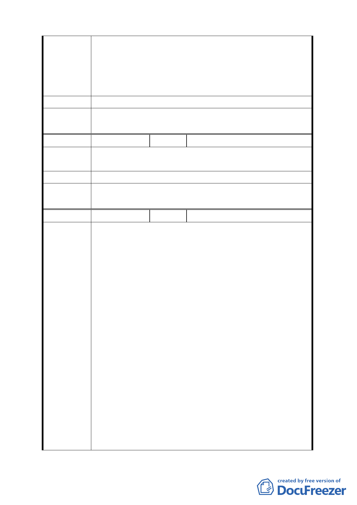

切的開發利用，仍必須受現行種種規範，如此一來繁榮
地方的美意及發展觀光休閒的功能也可以面面俱到。
三、明山宮說明會提供許多令人興奮的個案，如今看來並非
如此，太失望了。
四、懇請有關單位重新考量，用心規劃。
建議辦法 將全部保護區（規劃區）一併納入開發。
委員會議
決議
同編號 1。
編號
１０
陳情人 郭子榮
陳情理由 磺溪步道因有些地形陡峭，有落石危險需因應地形區取一
邊。
建議辦法 有些地形可採取兩邊，取一邊作為步道使用。
委員會議
決議
同編號 1。
編號
１１
陳情人 辜大興、辜大偉
土地標示：北投區行義段 1 小段 82、83、84、173、175、176
地號
一、本地區係屬山坡地地形，空地集中留設有實際之困難，
應配合景觀設計，使空間具有變化及多樣性。
二、世界各地之溫泉均是結合住宿、洗溫泉、餐飲、景觀休
憩一體之營運方式。例如：烏來、日本箱根等地區。尤
其住宿更屬重要，是產業營運生存之重點。
三、本案係屬山坡地形，允許建築之土地（坡度 30％以下）
相當稀少，故建請適度放寬建蔽率及容積率，以符土地
陳情理由
開發之經濟規模。
四、溫泉空間首重通風，建築物樓層是通風的要件，溫泉空
間更重空間之變化及層次，建請提高建築物高度以符合
產業之特性。
五、本地區之開發市府要求有足夠的停車空間，又屬山坡地
形，地面停車不易，故建請提高地下室之開挖率，以供
作停車使用，減少路邊停車對道路的衝擊。
六、依「山坡地開發建築要點」規定，開發面積需達 20000
平方公尺以上，且其他各項限制相當嚴格，若依該要點
申請開發，本地區幾乎無可符合該要點申請規定之建
9